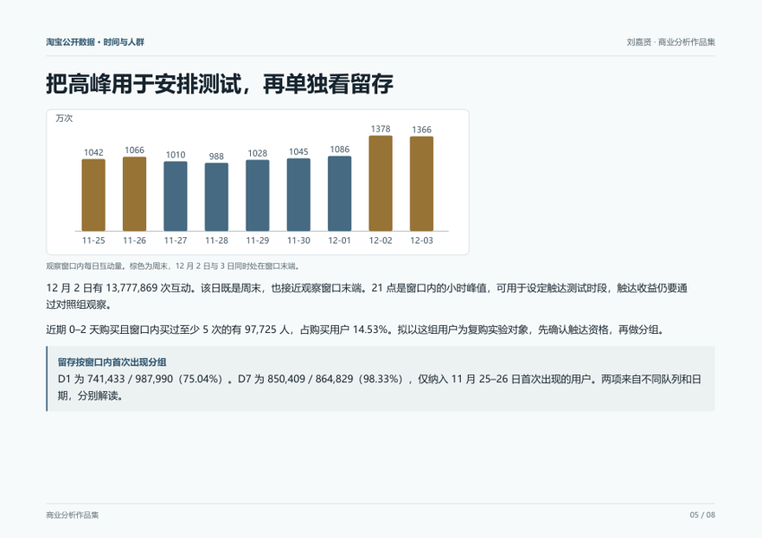
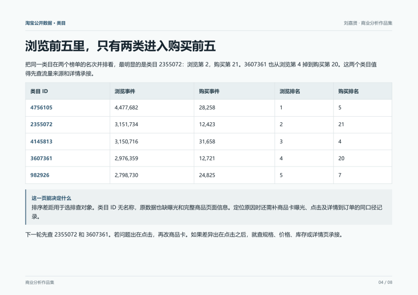
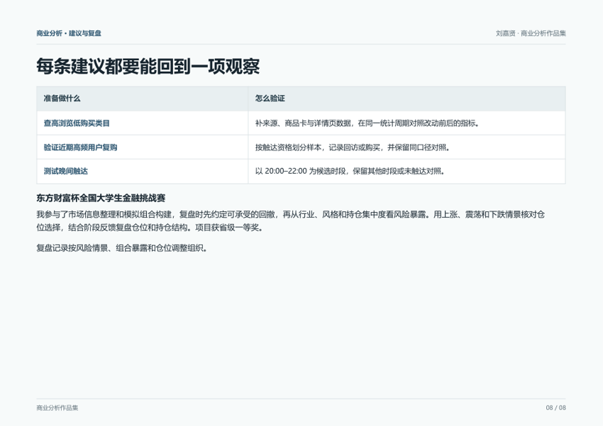

每日互动量约 1 亿条公开记录
淘宝用户行为分析
用 68.06% 用户购买覆盖率与 2.01% 购买事件占比回答不同问题。
查看案例商业分析作品集
从商品经营报表到淘宝公开行为数据，我先核对指标口径，再定位用户、事件和类目差异。

每日互动量约 1 亿条公开记录
用 68.06% 用户购买覆盖率与 2.01% 购买事件占比回答不同问题。
查看案例
类目排名对照淘宝数据延伸
浏览前五只有两个类目进入购买前五，用排名差距找到排查起点。
查看案例
风险复盘卡真实竞赛 · 省级一等奖
先界定最大回撤，再拆解组合暴露和仓位调整。
查看案例按用户去重，统计窗口内至少买过一次的人。
以行为条数为分母，回答购买在互动中有多频繁。
浏览前五只有两个进入购买前五，值得逐类目诊断。
电商运营实习 · 经营报表
用 Excel 汇总订单、退款和流量，结合 UV、点击率和转化率识别高流量低转化商品。淘宝案例沿用先核对口径、再定位问题的分析顺序。
看对应案例 ↗东北大学 · 工商管理硕士在读
湖北工业大学 · 电子商务本科
迭代记录
同一窗口内，购买用户占活跃用户的 68.06%，购买事件占全部互动的 2.01%。购买用户数与浏览用户数的比值为 68.33%。我把三个分母并排放，避免把覆盖人数之比读成按顺序发生的转化。
按用户去重，统计窗口内至少买过一次的人。
以行为条数为分母，回答购买在互动中有多频繁。
浏览前五只有两个进入购买前五，值得逐类目诊断。
约 1 亿条公开记录
在福禄科技实习时，我用 Excel 汇总订单、退款和流量报表。这个独立项目使用淘宝公开数据，把类似的运营问题扩展到用户、事件和类目三个口径。
淘宝数据延伸
真实竞赛 · 省级一等奖
灰色为工作日，金色为周末。虚线为 9 日均值。
| 日期 | 互动量 | 活跃用户 | 购买率 |
|---|---|---|---|
| 2017-11-25 | 10,420,015 | 706,641 | 18.77% |
| 2017-11-26 | 10,664,602 | 715,516 | 19.01% |
| 2017-11-27 | 10,101,147 | 710,094 | 20.69% |
| 2017-11-28 | 9,878,190 | 709,257 | 19.72% |
| 2017-11-29 | 10,284,073 | 718,922 | 20.34% |
| 2017-11-30 | 10,447,740 | 730,597 | 20.00% |
| 2017-12-01 | 10,859,436 | 740,139 | 18.91% |
| 2017-12-02 | 13,777,869 | 970,401 | 17.98% |
| 2017-12-03 | 13,662,159 | 966,977 | 17.91% |